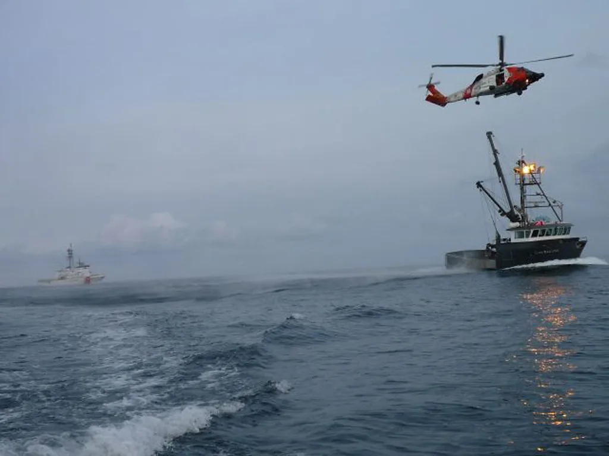

인천 자월도 앞바다 낚시객 3명 실종 11시간 만에 전원 구조
인천 옹진군 자월도 인근 해상에서 실종됐던 낚시객 3명이 11시간 만에 전원 무사히 구조됐다. 인천해양경찰서는 10일 오전 6시 10분쯤 자월도 부근 해상에서 전날 밤부터 실종 신고가 접수된 20~30대 남성 3명을 발견해 구조했다고 밝혔다. 이들은 발견 당시 의식이 뚜렷했고 큰 외상도 없었던 것으로 전해졌다. 해경은 신고 접수 후 밤새 수색을 이어간 끝에 날이 밝을 무렵 실종자들을 찾아냈다고 설명했다.
이들은 전날인 9일 인천 중구 영종도 왕산에서 모터보트를 빌려 타고 바다로 나가 낚시를 하던 중이었다. 오후 7시 10분쯤 가족과 마지막으로 통화한 뒤 연락이 끊겼고, 실종자 중 한 명의 아내가 약 3시간 20분이 지난 오후 10시 30분쯤 112에 신고하면서 해양경찰의 밤샘 수색이 본격적으로 시작됐다.

해경은 신고 접수 직후 경비함정과 조명탄, 항공기 등을 총동원해 야간 수색에 나섰다. 인명 사고 우려가 큰 사안인 만큼 한덕수 국무총리도 사고 소식을 접한 뒤 관계 부처에 "인명 구조를 최우선으로 하라"는 긴급 지시를 내리며 총력 대응을 주문한 것으로 전해졌다. 어두운 밤바다에서의 수색인 만큼 해경 내부에서도 긴장감이 감돌았던 것으로 알려졌으며, 인근 어선들도 자체적으로 수색에 힘을 보탰던 것으로 전해졌다.
밤새 이어진 수색 끝에 해경은 10일 새벽 자월도 인근 해상에서 실종자 3명을 발견했다. 이들은 뒤집힌 모터보트에 매달린 채 발견됐으며, 출항 당시부터 구명조끼를 착용하고 있었던 것이 무사 생환에 결정적인 역할을 한 것으로 분석된다. 장시간 표류에도 3명 모두 생명에는 지장이 없는 것으로 파악됐다. 이들은 보트가 전복된 이후에도 서로를 격려하며 구명조끼를 놓치지 않고 끝까지 버틴 것으로 전해졌다.

해경은 구조된 3명을 인근 병원으로 옮겨 정밀 검사를 진행했다. 여름철이라도 야간 장시간 해상 표류는 저체온증이나 탈진으로 이어질 수 있는 만큼, 의료진은 이들의 전반적인 건강 상태를 면밀히 살피며 경과를 지켜보고 있는 것으로 알려졌다. 다행히 이들은 큰 이상 없이 안정을 되찾은 것으로 전해졌으며, 가족들도 안도의 한숨을 내쉰 것으로 전해졌다.
해경은 사고 경위를 조사하는 한편, 모터보트가 전복된 정확한 원인을 규명하기 위해 실종자들의 진술을 확보하고 항해 당시 기상 상황과 파고 등을 함께 확인하고 있다. 여름철 야간 낚시객들이 출항 전 기상 정보와 항로를 충분히 숙지했는지 등 안전 수칙 준수 여부도 조사 대상에 오를 것으로 보인다. 해당 모터보트가 정식으로 등록된 선박이었는지, 정원과 안전장비를 제대로 갖췄는지도 함께 확인할 방침이다.
이번 사고는 여름 휴가철 해상 레저 활동이 늘면서 관련 안전사고 우려가 커지는 가운데 발생했다. 해경 관계자는 "야간 출항 시 구명조끼 착용은 물론, 기상특보 확인과 가족·지인에게 사전 항해 계획을 알리는 것이 신속한 구조에 결정적 역할을 한다"며 각별한 주의를 당부했다. 특히 이번 사고처럼 신고가 조금만 늦었더라도 수색과 구조에 더 큰 어려움을 겪었을 수 있다는 점에서, 실종 사실을 인지한 즉시 신고하는 것이 무엇보다 중요하다고 강조했다.